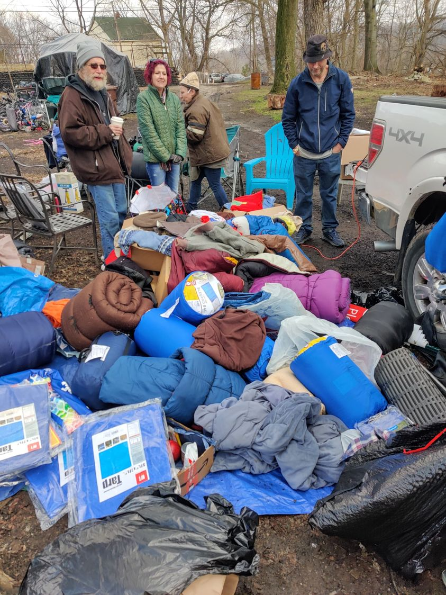

Timeline photos
Here is a small sampling of the items people dropped off to me on Christmas Eve night when I and a couple friends slept out on the corner of West Market and Portage Path.
What you did that night changed me. You imprinted upon me the realization of the ultimate truth of the world. That goodness and kindness abound. Goodness is everywhere. YOU are everywhere. You have always been the energy that keeps me moving forward. And the energy you gave me on Christmas Eve night was so profound and so powerful that I feel like I have transcended into a new understanding of the world. I see the world now for what it truly is: A place of boundless, immeasurable goodness and kindness and generosity that is being controlled by a few powerful, selfish people.
YOU are the "meek" that shall inherit the earth. YOU are the lamb of God. YOU are the body of Christ. I see it all so clearly now.
This is what's going to happen from here on out...
Every Sunday morning around 10am, we are going to meet in The Garden behind 85 Kent Place in Akron Ohio. Rain, snow, searing heat. We will come together. ALL OF US. Rich, poor, black, white, Hispanic, conservative, liberal. We will all come together. We will leave our differences at home and look for what connects us all.
Sunday Morning in The Garden will be a time where if you have something to give, you bring it. If you have something you need, you take it.
I'll bring 40 cups of coffee and about 2 dozen pastries. But if this grows we will likely need more. But we'll see how it goes. We'll see a need and fill it.
ALL ARE INVITED.
I can't promise you what it will be like from one Sunday to the next. It could be some kind of work. It SHOULD be visiting and making friends. Community is the answer to the question of life. Friendship is the most important thing you can ever give.
The secret to making a difference is Showing Up. Just show up and all will make sense from there.